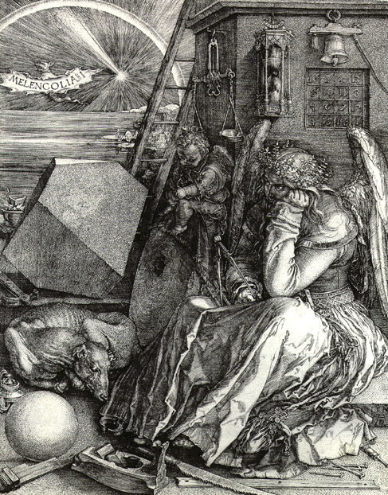

|
John Michell 1972 Page 160 All who study the cabalistic science and the geo-metry and numbers of creation are attacked by melancholy, some-times fatally, the suicide rate among cabalists being notoriously high. The Point is clearly made in Durer's Melancholia. The garden of paradise,symbol of the ultimate perfection of human consciousness, has many delightful inhabitants which are at the same time dange-rous beasts to whoever fails to recognise their nature and function; and of these the most treachorous is the mercurial old serpent of wisdom, that leads men on in the search of the treasure of which it is in itself the the venomous custodian.

THE MAGIC MOUNTAIN Thomas Mann 1875 -1955 Page 266 "..."And if one is interested in life, one must be particularly interested in death, mustn't one? " "Oh, well, after all, there is some sort of difference. Life is life which keeps the form through change of substance." "Why should the form remain?" said Hans Castorp. / Page 267 / "why? Young man, what you are saying now sounds far from humanistic." "Form is folderol." "Well, you are certainly in great form to-day - you're regularly kicking over the traces. But I must drop out now," said the Hofrat." I am beginning to feel melancholy," and he laid his huge hand over his eyes." I can feel it coming on. You see, I've drunk coffee with you, and it tasted good to me, and all of a sudden it comes over me that I am going to be melancholy. You gentlemen must excuse me. It was an extra occasion, I enjoyed it no end ... "
The Zed Aliz Zed again presents credentials This acknowledgement of the contributions of others within this hymn of praise to creative consciousness is freely and humbly given. It is perhaps indicative of where Eht Namuh stands on the ladder of its progress in this quintessential moment of time, that each and every one of us seeks a credit for this of that which all of us, as creative entities have been entrusted with exteriorizing. For and on behalf of that creative intelligent consciousness, holding each and every one of us in thrall, the initiator, and motivating power of the mysterious process of life. Eht Namuh within the this of the that of the he as in she of the thou, of the thou as in ought, of the ought as in thought, give only praise and credit to the true creator. The energy of intelligent living creativity abundant and fecund manifested everywhere and in everything, for all is living energy, living creative energy, known variously and collectively as the one God. Cast off the shackles of thy puny ego Eht Namuh and accord thanks only for thy honoured participation in creativity of a kind and thank your stars for that, for there is a mountain to climb or otherwise a mounting oblivion shall be your future. In the beginning was the word and the word was that notion, the notion of an individual unique self is no notion at all, therefore if any part of the this of the that of this work can in any way help to free the understanding of thee Eht Namuh from the dark age tyranny of thy thinking thoughts of the he as in she absurdity of the no notion at all of an individual self publish and be not damned, but be thou blessed. Give only thy praise in wonder to that living essence of the energy within and without which is thy true nature. Blessed be the name of thy true god which is at one with thee, for thou art of it and it of thee.
JOSEPH AND HIS BROTHERS Thomas Mann, The Tales of Jacob of the Long Waiting. Page 174 "This man had said to that man: Give me thy daughter to wife, and the other man had answered: What wilt thou give for her? And the other man had had nothing. Then the above mentioned man had said: Seeing that thou canst pay no dowry nor any presents to hang at the bride's girdle at the betrothal, thou shalt serve me for as many years as the week hath days." "Then said the other man: So be it. In the name of the king, so be it. Each side took one of the contracts." "The agreement was sensible, the judge found it fair, and from the business side, Jacob himself had not much to complain of. If he owed his uncle a mina of silver at sixty shekels, seven years' labour would not suffice to pay the debt, for the average wage for a labourer was seven shekels a year, and seven of them would not make up the sum. He felt profoundly that the economic point of view was a very deceptive one; that if there were a just scale, a God's scale, as it were, the side with the seven years would have made the side with the shekels fly up into the air. But after all, he would spend these years in Rachel's company and thus love's sacrifice would be mingled with much joy."
Page 175 "Seven years! Seven years they must wait for each other." "As for the seven years, they were even now in the process of being lived down." "Jacob suppressed the thought in his mind. This he did and so too should the narrator, and not imagine that he can pass over and obliterate the time with a little sentence like "Seven years went by." It is the story-tellers way to say things like that." "And even pass as though they had been seven days. For such is the tradition: that the seven years before which Jacob had at first quailed with fear, passed by like days." "What we have here is certainly no "seven-sleeper" enchantment, nor, indeed, any other kind, save that of time itself, whose larger units pass as do the smaller ones, neither slow nor fast, but simply pass." Page 176 "Jacob did not say that seven years went as fast as days" "Thus it was Jacob said that seven years, to him, like days." "Seven days may under some circumstances be harder to swallow, a more daring adventure in time than seven years." "And if we look back, lo, the point where we stepped in is "far back" it is, for instance seven years away, years that have passed like days." "No one says that Jacob undertook and entered upon his seven years with joy, for only after they had passed might he beget children with Rachel." "And thus seven years to him, while not so little as seven years in the sight of God, were yet not nearly so much to him as to one who should live but fifty or sixty years." Page 176/7 "Pure waiting is torture; no one could bear to sit seven years, or seven days." JOSEPH AND HIS BROTHERS Thomas Mann 1933 The Time of Enfranchisement. Page 980 9 x 8 = 72 "What would have become of us, for instance when Jacob was serving with the Devil Laban, seven and thirteen and five - in short, twenty-five years." "And what would become of us now without that reasonable principle, when our little bark, driven by the measuredly moving stream of narration, hovers again on the brink of a time-cataract of seven and seven prophesied years? Well, to begin with, and just amongst ourselves: in these fourteen years things were neither quite so definitely good nor so definitely bad as the prophecy would have them." "For the sake of the prophecy they are willing to agree that two and two make five - if the phrase may be used in a context where not five but an even higher odd number, namely seven, is in question. Probably this would constitute no great difficulty, five being almost as respectable a number as seven; and surely no reasonable man would insist that five instead of seven could constitute and inexactitude. In fact and in reality the prophesied seven looked rather more like five." "Among the fat ones were one or two which might have been described as certainly not lean, but to a critical eye as certainly no more than very moderately fat. The lean ones were all lean enough, at least five of them, if not seven;" And now a momentary aside, said Zed-aliz to the scribe.
THE MAGIC MOUNTAIN Thomas Mann 1933 Penguin Modern Classics The cover of this addition shows a detail from 'Dent du Midi' by Oskar Kokoschka. Forward. Page XII and counting. From the front cover to the back seventh page the following quote.
"Not all in a minute then, will the narrator be finished with the story of our Hans. The seven days of a week will not suffice, no, nor seven months either. Best not too soon make too plain how much mortal time must pass over his head while he sits spun round in his spell. Heaven forbid it should be seven years!
The Magic Mountain.
Graham Hancock. 1995 Page 382 "Of the nine Ra, Shu, Geb and Osiris were said to have ruled in Egypt as Kings, followed by Horus, and lastly for three two two six years by the Ibis headed wisdom God Thoth. Note eight" Note this is the ninth line up. I can't keep track of all that said the scribe. Just keep your I's down said Zed Aliz and indicate when you have a full house
E-mail from Jacob 7, date 9th August 2000, time 13.51, to Rachel. "Rachel, I responded to your last message, as I was supposed to do before I opened it. Having now read it, I write as one who has been blessed yet again by the thou of the them beyond our ken, reaching out to this given soul touching, me within the hermitage of that aloneness through which this entity is allowed right of passage to exteriorize the words of others. For I am the journeyman, thou art the one who from out of the kindness and fineness of a sisters spirit has conveyed to me a message within a message. Today is the ninth of the eighth month. Nine times eight is seventy-two. Seventy-two is the number of conspirators that along with our brother Set consigned our beloved brother Osiris to the other side. Beloved brother Set had beloved brother Osiris dismembered into fourteen separate pieces. Fourteen times seventy two is one zero zero eight. Re, our father in the age known as the first time spawned eight gods. Eight and one are nine. Nine of eight, toady's date. We say again nine times eight is seventy-two. The other man the God Thoth reigned for three two two six years. Three times two, times two, times six is seventy-two. Today via your source material you preached the blessed sanctity of my aloneness and acted as a sacred conduit from the them of the thou, of the ought as in thought. The Book of Revelations is the last piece of the pattern of the jigsaw that is not a jigsaw. The eye of the me, as in you, as in he, as in the she that is thee started to transcribe this yesterday, read it wah Rachel. Note also the reference to the number forty five contained within your message of a message. Finally dear Rachel, seventy-two is the number of years required for the equinoctial sun to complete a precessional shift of one degree along the ecliptic. My dear you know the difference between the words exoteric and esoteric. That of which you are now in receipt is at this quintessential moment of the now, the now of yours and mine, fast coming to fruition. It's time draws nigh, until the moment when its tick talks thy tongue should be held fast between the sweetness of thy lips. I weep tears of gratitude for such an act of considered kindness as has seen fit to reach out within the oft times desperation of the aloneness that this task has visited upon me. Blessings on thy frosty pow and that of thy source. God willing it will not be too late. Love to thee Rachel. Goodbye my dear. Your loving husband Jacob.
Graham Hancock 1995 Chapter 24 page number 201 omitted "In some of the most powerful and enduring myths that we have inherited from ancient times, our species seems to have retained a confused but resonant memory of a terrifying global catastrophe. Where do these myths come from? Why, though they derive from unrelated cultures, are their storylines so similar? why are they laden with common symbolism? and why do they so often share the same stock characters and plots? If they are indeed memories, why are there no historical records of the planetary disaster they seem to refer to? Could it be that the myths themselves are historical records? Could it be that these cunning and immortal stories, composed by anonymous geniuses, were the medium used to record such information and pass it on in the time before history began? And the ark went upon the face of the waters There was a king, in ancient Sumer, who sought eternal life. His name was Gilgamesh. We know of his exploits because the myths and traditions of Mesopotamia, inscribed in cuneiform script upon tablets of baked clay, have survived. Many thousands of these tablets, some dating back to the beginning of the third millennium BC, have been excavated from the sands of modern Iraq. They transmit a unique picture of a vanished culture and remind us that even in those days of / Page 202 / lofty antiquity human beings preserved memories of times still more remote - times from which they were separated by the interval of a great and terrible deluge: I will proclaim to the world the deeds of Gilgamesh. This was the man to whom all things were known; this was the king who knew the countries of the world. He was wise, he saw mysteries and knew secret things, he brought us a tale of the days before the flood. He went on a long journey, was weary, worn-out with labour, returning he rested, he engraved on a stone the whole story.1 The story that Gilgamesh brought back had been told to him by a certain Utnapishtim, a king who had ruled thousands of years earlier, who had survived the great flood, and who had been rewarded with the gift of immortality because he had preserved the seeds of humanity and of all living things. It was long, long ago, said Utnapishtim, when the gods dwelt on earth: Anu, lord of the firmament, Enlil, the enforcer of divine decisions, Ishtar, goddess of war and sexual love and Ea, lord of the waters, man's natural friend and protector. In those days the world teemed, the people multiplied, the world bellowed like a wild bull, and the great god was aroused by the clamour. Enlil heard the clamour and he said to the gods in council, 'The uproar of mankind is intolerable and sleep is no longer possible by reason of the babel.' So the gods agreed to exterminate mankind.'2 Ea, however, took pity on Utnapishtim. Speaking through the reed i wall of the king's house he told him of the imminent catastrophe and instructed him to build a boat in which he and his family could survive: Tear down your house and build a boat, abandon possessions and look for life, despise wordly goods and save your soul. . . Tear down your house, I say, and build a boat with her dimensions in proportion - her width and length in harmony. Put aboard the seed of all living things, into the boat.' In the nick of time Utnapishtim built the boat as ordered. 'I loaded into her all that I had,' he said, 'loaded her with the seed of all living things': / Page 203 / I put on board all my kith and kin, put on board cattle, wild beasts from open country, all kinds of craftsmen. . . The time was fulfilled. When the first light of dawn appeared a black cloud came up from the base of the sky; it thundered within where Adad, lord of the storm was riding. . . A stupor of despair went up to heaven when the god of the storm turned daylight to darkness, when he smashed the land like a cup... On the first day the tempest blew swiftly and brought the flood. . . No man could see his fel1ow. Nor could the people be distinguished from the sky. Even the gods were afraid of the flood. They withdrew; they went up to the heaven of Anu and crouched in the outskirts. The gods cowered like curs while Ishtar cried, shrieking aloud, 'Have I given birth unto these mine own people only to glut with their bodiesthe sea as though they were fish?'4 Meanwhile, continued Utnapishtim: For six days and nights the wind blew, torrent and tempest and flood overwhelmed the world, tempest and flood raged together like warring hosts. When the seventh day dawned the storm from the south subsided, the sea grew calm, the flood was stilled. I looked at the face of the world and there was silence. The surface of the sea stretched as flat as a roof-top. All mankind had returned to clay. . . I opened a hatch and light fell on my face. Then I bowed low, I sat down and I wept, the tears streamed down my face, for on every side was the waste' of water. . . Fourteen leagues distant there appeared a mountain, and there the boat grounded; on the mountain of Nisir the boat held fast, she held fast and did not budge. . . When the seventh day dawned I loosed a dove and let her go. She flew away, but finding no resting place she returned. Then I loosed a swallow, and she flew away but finding no resting place she returned. I loosed a raven, she saw that the waters had retreated, she ate, she flew around, she cawed, and she did not come back.'5 Utnapishtim knew that it was now safe to disembark: I poured out a libation on the mountain top. . . I heaped up wood and cane and cedar and myrtle. . . When the gods smel1ed the sweet savour they gathered like flies over the sacrifice. . .'6 These texts are not by any means the only ones to come down to us from the ancient land of Sumer. In other tablets - some almost 5000 / Page 204 / years old, others less than 3000 years old - the 'Noah figure' of Utnapishtim is known variously as Zisudra, Xisuthros or Atrahasis. . . Even so, he is always instantly recognizable as the same patriarchal character, forewarned by the same merciful god, who rides out the same universal flood in the same storm-tossed ark and whose descendants repopulate the world. There are many obvious resemblances between the Mesopotamian flood myth and the famous biblical story of Noah and the deluge' (see note). Scholars argue endlessly about the nature of these resem-blances.What really matters, however, is that in each sphere of influence the same solemn tradition has been preserved for posterity- a tradition which tells, in graphic language, of a global catastrophe and of the near-total annihilation of mankind.
Page 208 "How far and how widely across the myth memories of mankind do the ripples of the great flood spread? Very widely indeed. More than 500 deluge legends are known around the world and, in a survey of 86 of these (20 Asiatic, 3 European, 7 African, 46 American and 10 from Australia and the Pacific), the specialist researcher Dr Richard Andree concluded that 62 were entirely independent of the Mesopotamian and Hebrew accounts 25 For example, early Jesuit scholars who were among the first Europeans to visit China had the opportunity in the Imperial Library - to study a vast work, consisting of 4320 volumes, said to have been handed down from ancient times and to contain 'all knowledge'. This great book included a number 'of traditions which told of the consequences that followed when mankind rebelled against the high gods and the system of the universe fell into disorder': 'The planets altered their courses. The sky sank lower towards the north. The sun, moon and stars changed their motions. The earth fell to pieces and the waters in its bosom rushed upwards with violence and overflowed the earth.'26 In the Malaysian tropical forest the Gewong people believe that every so often their own world, which they call Earth Seven, turns upside down so that everything is flooded and destroyed. However, through the agency of the Creator God Tohan, the flat new surface of what had previously been the underside of Earth Seven is moulded into mountains, valleys and plains. New trees are planted, and new humans born.27..." EARTH HEART THERA TERAH TERAH THERAHEART EARTH
ENLIL EARTH
GILGAMESH ANU
GILGAMESH UTNAPISHTIM ISHTAR ENLIL EA ANU MANU ADAD SUMER NOAH TOHAN
MANU SUMER TOHAN
FINGERPRINTS OF THE GODS Graham Hancock 1995 Page 210 "As the Hebrews looked back on Noah, so the Greeks of ancient historical times looked back upon Deucalion - as the ancestor of their nation and as the founder of numerous towns and temples.38 A similar figure was revered in Vedic India more than 3000 years , ago. One day (the story goes) when a certain wise man named Manu was making his ablutions, he found in the hollow of his hand a tiny lime fish which begged him to allow it to live. Taking pity on it he put it in a jar. The next day, however, it had grown so much bigger that he had to carry it to a lake.Soon the lake was too small. 'Throw me into the sea,' said the fish [which was in reality a manifestation of the god Vishnu] 'and I shall be more comfortable.' Then he warned Manu of a coming deluge. He sent him a large ship, with orders to load it with two of every living species and the seeds of every plant, and then to go on board himnself.'39 Manu had only just carried out these orders when the ocean rose and submerged everything, and nothing was to be seen but Vishnu in his fish form - now a huge, one-horned creature with golden scales. Manu moored his ark to the horn of the fish and Vishnu towed it across the brimming waters until it came to rest on the exposed peak of 'the Mountain of the North':40 The fish said, 'I have saved thee; fasten the vessel to a tree, that the water may not sweep it away while thou art on the mountain; and in proportion as the waters decrease thou shalt descend.' Manu descended with the waters. The Deluge had carried away all creatures and Manu remained alone.41 With him, and with the animals and plants he had saved from destruction, began a new age of the world. After a year there emerged from the waters a woman who announced herself as 'the daughter of Manu'. The couple married and produced children, thus becoming the ancestors of the present race of mankind.42 Last but by no means least, Ancient Egyptian traditions also refer to a great flood. A funerary text discovered in the tomb of Pharaoh Seti I, for example, tells of the destruction of sinful humanity by a deluge."3 The reasons for this catastrophe are set out in Chapter CLXXV of the Book of the Dead, which attributes the following speech to the Moon God Thoth: They have fought fights, they have upheld strifes, they have done evil, / Page 212 / they have created hostilities, they have made slaughter, they have caused trouble and oppression. . . [Therefore] I am going to blot out everything which I have made. This earth shall enter into the watery abyss by means of a raging flood, and will become even as it was in primeval time.44 On the trail of a mystery With the words of Thoth we have come full circle to the Sumerian and biblical floods. 'The earth was filled with violence', says Genesis: And God looked upon the earth, and, behold, it was corrupt; for all flesh had corrupted his way upon the earth. And God said unto Noah, 1:5 'The end of all flesh is corne before me; for the earth is filled with violence through them; and behold I will destroy them with the earth.'45 Like the flood of Deucalion, the flood of Manu, and the flood that destroyed the Aztecs' 'Fourth Sun', the biblical deluge was the end of a world age.A new age succeeded it: our own, populated by the descendants of Noah. From the very beginning, however, it was understood that this age too would in due course come to a catastrophic end. As the old song puts it, 'God gave Noah the rainbow sign; no more water, the fire next time.' The Scriptural source for this prophecy of world destruction is to be found in 2 Peter 3: We must be careful to remember that during the last days there are bound to be people who will be scornful and [who will say], 'Everything goes on as it has since it began at the creation'.They are choosing to forget that there were heavens at the beginning, and that the earth was formed by the word of God out of water and between the waters,so that the world of that time was destroyed by being flooded by water. But by the same word, the present sky and earth are destined for ftre, and are only being reserved until Judgement Day so that all sinners may be destroyed. . . The Day of the Lord will come as a thief in the night, and then with a roar the sky will vanish, the elements will catch fire and fall apart, and the earth and all that it contains will be burnt up.46 The Bible, therefore, envisages two ages of the world, our own being / Page 213 / the second and last. Elsewhere, in other cultures, different numbers of creations and destructions are recorded. In China, for instance, the perished ages are called kis, ten of which are said to have elapsed from the beginning of time until Confucius. At the end of each kis, 'in a general convulsion of nature, the sea is carried out of its bed, mountains spring up out of the ground, rivers change their course, human beings and everything are ruined, and the ancient traces effaced. . .'47 Buddhist scriptures speak of' Seven Suns', each brought to an end by water, fire or wind.48 At the end of the Seventh Sun, the current 'world cycle', it is expected that the 'earth will break into flames'.49 Aboriginal traditions of Sarawak and Sabah recall that the sky was once 'low' and tell us that 'six Suns perished. . . at present the world is illuminated by the seventh Sun,.50 Similarly, the Sibylline Books speak of 'nine Suns that are nine ages' and prophesy two ages yet to come - those of the eighth and the ninth Sun., On the other side of the Atlantic Ocean, the Hopi Indians of Arizona (who are distant relatives of the Aztecss2) record three previous Suns, each culminating in a great annihilation followed by the gradual re-emergence of mankind. In Aztec cosmology, of course, there were four Suns prior to our own. Such minor differences concerning the precise number of destructions and creations envis-aged in this or that mythology should not distract us from the remarkable convergence of ancient traditions evident here. Allover the world these traditions appear to commemmorate a widespread series of catastrophes. In many cases the character of each successive cataclysm is obscured by the use of poetic language and the piling up of metaphor and symbols. Quite frequently, also, at least two different kinds of disaster may be portrayed as having occurred simultaneously (most frequently floods and earthquakes, but sometimes fire and a terrifying darkness). All this contributes to the creation of a confused and jumbled picture. The myths of the Hopi, however, stand out for their straightforwardness and simplicity. What they tell us is this: The first world was destroyed, as a punishment for human rnisde- meanours, by an all-consuming fire that came from above and below. The second world ended when the terrestrial globe toppled from its axis / Page 214 / and everything was covered with ice. The third world ended in a universal flood. The present world is the fourth. Its fate will depend on whether or not its inhabitants behave in accordance with the Creator's plans.53 We are on the trail of a mystery here. And while we may never hope to fathom the plans of the Creator we should be able to reach a judgement concerning the riddle of our converging myths of global destrqction. Through these myths the voices of the ancients speak to us directly. What are they trying to say? " THE REMAINING REMINDER Here you are scribe. said Zed Aliz Zed, keep fast hold of yonder thread of golden light. I certainly will said the scribe. We certainly will echoed the attendant shadows. Examining that thread of light end to end and meeting in the middle.
Jenny Joseph 1997 The thread "There was the thread, the thread you see, and she followed it. Curdie, no that was a boy, Curdie and the thread, the good boy, he got her through. Or there was a fall of rock and it was buried, she had to scrabble with her hands and they never got them out those people trapped underneath when the earthquake collapsed the buildings. I can remember the man with his bare hands, they were bare, raw, that's it, skinned - but it must have been a pic-ture of course. But the thread was there, sometimes - he was losing it, losing his thought. Yes, that was the way the thread went, it came and went, elu-sive as thought - now it flashed into focus, now he had it, him sitting reading to his little girl - but he can't have had that book as a child, he hadn't had that sort of childhood. Thinking about the thread, the idea, myth of the thread was a good way to get you applying yourself, persisting, and he had, hadn't he, he'd gone on searching with his dog in the rubble long after the others had given up. So that thinking, which he'd thought he'd come to as a solid thing like chipping away shale and muck to get at a bit of core, a thing like a lump of coal, usable, source of energy, so that it didn't matter what you thought, it was a rope ladder to get you across somewhere, get you through the mess, something you pretended, no, not pretended - made up? - to be doing to give a reason for going on. Made up. Ah perhaps something you made, engineered, he'd like it when they called him Monsieur l'lngenieur, ingenious. Not for a reason - you don't need a reason for going on, you need a road, a way, ah yes a means. A way of going. That was tautology. You could just say 'a way'. 'Tell Alice' (you think I don't know she's dead, he heard his crafty thought within his head and in the same flash behaved as if he didn't), 'keep her fingers on the golden thread.' If it's all a fancy, if there isn't something that's true, then there isn't untrue and you were back where you were. He was getting there, getting down that path and this time he would get there, he could still breathe he could still tell them even though they couldn't move the rock off him. If there isn't anything that's true, the opposite of true was false. But it couldn't be false because you can't have an opposite to some- thing that doesn't exist. Though what about negative numbers? / Page 168 / Alice was cleverer than he was he should have asked her. But she could never explain things like he could but after all he'd been a teacher. So if no true, no false and nothing true means everything false. Yes, he'd got it. 'Useful,' he said. They bent low pretending they could hear to encourage him to speak some more. Useful. It was all useful. Alice's knitting had been useful. The thread and the rope ladder and the bridge were useful. Useful was much more; useful than true. If he had realised that it was his son who was holding his hand he might have tried to speak in his type of hearty old reprobate he'd put on for years for young people and said something in character like 'Bugger the truth' because he knew they thought he thought truth was the pearl so he had it both ways. They would have been his next, last words but he kept his secret from them till the end because he had got beyond the division of time that living beings need in order to negotiate it, to a point where command question statement implying continuing into a future from the past were neither true, false or useful."
Thomas Mann 1924 Page 367 "LONG days - the longest, objectively speaking, and with reference to the hours of daylight they contained; since their astronomical length could not affect the swift passage of them, either taken singly or in their monotonous general flow. The vernal equinox lay three months back, the solstice was at hand. But the seasons up here / Page 368 / followed the calendar with halting steps, and only within the last few days had spring fairly arrived: a spring still without hint of summer's denser air, rarefied, ethereal, and balmy, with the sun sending silvery gleams from a blue heaven, and the meadows blithe with parti-coloured flowers. Hans Castorp found bluebells and yarrow on the hill-side, like the ones Joachim had put in his room to greet him when he came;and seeing them, realized how the year was rounding out. Those others had been the late blossoms of the declining summer; whereas now the tender emerald grass of the sloping meadows was thick- starred with every sort of bloom, cup-shaped, bell-shaped, star- shaped, any-shaped, filling the sunny air with warm spice and scent: quantities of wild pansies and fly-bane, daisies, red and yel-low primulas, larger and finer than any Hans Castorp had ever seen down below, so far as he could recall noticing, and the nodding soldanella, peculiar to the region, with its little eye-lashed bells of rose-colour, purple, and blue. Hans Castorp gathered a bunch of all this loveliness and took it to his room; by no means with the idea of decoration, but of set and serious scientific intent. He had assembled an apparatus to serve his need: a botanical text-book, a handy little trowel to take up roots, a herbarium, a powerful pocket-lens. The young man set to work in his loggia., clad in one of the light summer suits he had brought up with him when he came - another sign that his first year was rounding out its course. Fresh-cut flowers stood about in glasses within his room, and on the lamp-stand beside his highly superior chair. Flowers half faded, wilted but not dry, lay scattered on the floor of the loggia and on the balustrade; others, between sheets of blotting-paper, were giving out their moisture under pressure from heavy stones. When they were quite dry and flat, he would stick them with strips of paper into his album. He lay with his knees up, one crossed over the other, the manual open face down upon his chest like a little gabled roof; holding the thick bevelled lens between his honest blue eyes and a blossom in his other hand, from which he had cut away with his pocket-knife a pan of the corolla, in order the better to examine the thalamus - what a great fleshy lump it looked through the powerful lens! The anthers shook out their yellow pollen on the thalamus from the tips of their filaments, the pitted pistil stood stiffly up from the ovaries; when Hans Castorp cut throug it lon-gitudinally, he could see the narrow channel through which the pollen grains and utricles were floated by the nectar secretion into the ovarian cavity. Hans Castorp counted, tested, compared; he / Page 369 / studied the structure and grouping of calyx and petals as well as the maJe and female organs; compared what he found with the sketches and diagrams in his book; and saw with satisfaction that these were accurate when tested by the structure of such plants as were known to him. Then he went on to those he had not known the names of, and by the help of his Linnaeus established their class group, order, species, family, and genus. As he had time at his dis-posal; he actually made some progress in botanical systematization on the basis of comparative morphology. Beneath each dried speci- men in his herbarium he carefully inscribed in ornamental lettering the Latin name which a humanistic science had gaJlantly bestowed on it; added its distinguishing characteristics, and submitted the whole to the approvaJ of the good Joachim. who was all admiration. Evenings he gazed at the stars. He was seized with an interest in the passing year - he who had already spent some twenty-odd cycles upon this earth without ever troubling his head about it. If the writer has been driven to taJk about the vernaJ equinox and suchlike, it is because these terms formed the present mental furni-ture of our hero, which he now loved to set out on all occasions, here too surprising his cousin by the fund of information at his command. " The sun," he might begin, as they took their walks together, " will soon be entering the sign of the Crab. Do you know what that means? It is the first summer sign of the zodiac, you know. Then come Leo and Virgo, and then the autumn, the equinox, toward the end of September, when the rays of me sun fall ver-tically upon the equator again, as they did in March, when the sun was in the sign of the Ram." " I regret to say it escaped my attention," Joachim said grumpily, What is all that you are reeling off so glibly about the Ram and the zodiac? " " Why, you know what the zodiac is - the primitive heavenly signs: Scorpio, Sagittarius, Capricorn, Aquarius, and the rest. How can you help being interested in them? At least, you must know there are twelve of them, three for each season, the ascending and the declining year, the circle of constellations through which the sun passes. I think it's great. Imagine, they have been found em-ployed as ceiling decoration in an Egyptian temple - and a temple of Aphrodite, to boot - not far from Thebes. They were known to the Chaldeans too, the Chaldeans, if you please, those Arabic-Semitic old necromancers, who were so well versed in astrology and soothsaying. They knew and studied the zone in the heavens through which the planets revolve; and they divided it into twelve / Page 370 / signs by constellations, the dodecatemoria, just as they have been handed down to us. Magnificent, isn't it? There's humanity for you! " " You talk about humanity just like Settembrini." " Yes - and yet not just the same either. You have to take hu-manity as it is; but even so I find it magnificent. I like to think about the Chaldeans when I lie and look at the planets they were familiar with - for, clever as they were, they did not know them all. But the ones they did not know I cannot see either. Uranus was only re-cently discovered, by means of the telescope - a hundred and twenty years ago." " You call that recently? " " I call it recently - with your kind permission - in comparison with the three thousand years since their time. But when I lie and look at the panets, even the three thousand years get to seem 'recently,' and I begin to think quite intimately of the Chaldeans, and how in their time they gazed at the stars and made verses on them - and all that is humanity too." " I must say, you have very tall ideas in your head." " You call them tall, and I call them intimate - it's all the same, whatever you like to call it. But when the sun enters Libra again, in about three months from now, the days will have shortened so much that day and night will be equal. The days keep on getting shorter until about Christmas-time, as you know. But now you must please bear in mind that, while the sun goes through the win-ter signs - Capricorn, Aquarius, and Pisces - the days are already getting longer! For then spring is on the way again - the three-thousandth spring since the Chaldeans; and the days go on length-ening until we have come round the year, and summer begins again." " Of course." " No, not of course at all- it is really all hocus-pocus. The days lengthen in the winter-time, and when the longest comes, the twenty-first of June, the beginning of summer, they begin to go downhill again, toward winter. You call that' of course '; but if one once loses hold of the fact that it is of course, it is quite fright-ening, you feel like hanging on to something. It seems like a prac-tical joke - that spring begins at the beginning of winter, and autumn at the beginning of summer. You feel you're being fooled, led about in a circle, with your eye fixed on something that turns out to be a moving point. A moving point in a circle. For the circle consists of nothing but such transitional points without any extent whatever; the curvature is incommensurable, there is no duration / Page 371 / of motion, and eternity turns out to be not' straight ahead' but ' merry-go-round '! " For goodness' sake, stop! " " The feast of the solstice - midsummer night! Fires on the mountain-top, and ring-around-a-rosy about the leaping flames! I have never seen it; but they say our rude forefathers used thus to celebrate the first summer night, the night with which autumn be-gins, the very midday and zenith of the year, the point from which It goes downhill again: they danced and whirled and shouted and exulted - and why, really, all that primitive exultation? Can you make it out? What were they so joIly about? Was it because from then on the world went down into the dark - or perhaps because it had up till then gone uphill, and now the turning-point was reached, the fleeting moment of midsummer night and midsummer madness, the meeting-place of tears and laughter? I express it as it is, ill the words that come to me. Tragic joy, triumphant sadness - that was what made our ancestors leap and exuft around the leaping flames: they did so as an act of homage to the madness of the circle, to an eternity without duration, in which everything recurs - ..." Robert Bauval Graham Hancock 1996 "The 'solar way' or 'path of Horus' is, of course, the ecliptic - that imaginary way or path in the sky on which the sun appears to travel through the twelve signs of the zodiac. As we saw in earlier chapters, the direction of the sun's 'journey' during the course of the solar year is Aquarius -:; Pisces -:; Aries -:; Taurus -:; Gemini -:; Cancer -:; Leo, etc., etc. The reader will recall, however, that there is also another, more ponderous motion, the precession of the earth's axis, which gradually rotates the 'ruling' constellation against the background of which the sun is seen to rise at dawn on the vernal equinox. This great cycle, or 'Great Year', takes 25,920 solar years to complete, with the vernal point spending 2,160 years in each of the twelve zodiacal constellations. The direction of motion is Leo -:; Cancer -:; Gemini -:; Taurus -:; Aries -:; Pisces -:; Aquarius, etc., etc., i.e. the reverse of the route pursued by the sun during the course of the solar year. Gods and heroes In addition to the Turin Papyrus other chronological records support the notion of an immensely ancient 'academy' at work behind the scenes in Egypt. Amongst these, the most influential were compiled, / Page 224 / as we saw earlier, by Manetho (literally, 'Truth of Thoth'), who lived in the third century BC and who 'rose to be high priest in the temple at Heliopolis'.17 There he wrote his now lost History of Egypt which later commentators tell us was divided up into three volumes dealing, respectively, with 'the Gods, the Demigods, the Spirits of the Dead and the mortal Kings who ruled Egypt'. 18 The 'Gods' it seems, ruled for 13,900 years. After them 'the Demigods and Spirits of the Dead' - epithets for the 'Followers of Horus' - ruled for a further 11,025 years.19 Then began the reign of the mortal kings, which Manetho divided into the thirty-one dynasties still used and accepted by scholars today. Other fragments from Manetho's History also suggest that important and powerful beings were present in Egypt long before the dawn of its historical period under the rule of Menes. For example Fragment 3, preserved in the works of George Syncellus, speaks of 'six dynasties or six gods who. . . reigned for 1 1,985 years,.20 And in a number of sources Manetho is said to have given the figure of 36,525 years for the entire duration of the civilization of Egypt from the time of the gods down to the end of the last dynasty of mortal kings.21 A rather different total of around 23,000 years has been handed down to us by the Greek historian Diodorus Siculus who visited ~ Egypt in the first century DC and spoke there with priests and ~ chroniclers. According to the stories he was told: 'At first Gods and if Heroes ruled Egypt for a little less than 18,000 years. . . Mortals have' been kings of their country, they say, for a little less than 5000 years.' 22 1 x 1 x 9 x 8 x 5 = 360. . . 3 x 6 = 18 . . . 1+ 8 = 9. . . 8 x 9 = 72 7 + 2 = 9
11985 divided by nine = 1331.666
the figure of 36,525 years . . . 3 x 6 x 5 x 2 x 5 = 900
The Alizzed paused for a moments stillnes and then quick as you like straight there reight between the I's, took the name of a real star and transcribed it into the Raalphabetamagicalalphabetikalalphabet.
10 + 21 + 16 + 9 + 20 + 5 + 18 NINETY99NINE OM aum mani padme hum ZAZAZAZAZAZAZAZAZA And now, az if by magic of another kind a most wonderful presentation, Ladies and gentlemen, sentient beings all, For your delectation and delight eye give you, from one knight only THAT RA ALPHABETAMAGICALALPHABETIKALALPHABET Here, az if a being out of kilter, the Alizzed magiked up the magic names of Osiris, Iris, and Set, who then multiplied a truth.
THE RECURRENT DREAM
The far yonder scribe again watched in some amaze the Zed Ali Zed, in swift repeat scatter the nine numbers amongst the letters of their progress. At the throw of the ninth arm when in conjunction set, the far yonder scribe made record of the fall
THE POETICS OF ASCENT Theories of Language in a Rabbinic Ascent Text Naomi Janowitz 1989 The sound swells and bursts out in a mighty rush - Holy, holy, holy, Lord of host, the whole earth is full of his glory. 6 6 6 HOLY HOLY HOLY OM ZAZAZAZAZAZAZAZAZA T H E. . . B L E S S E D. . .C H R I S T
THIRTY 33 THREE . . . SIXTY 66 SIX . . . SEVENTY 77 SEVEN
. S 6 IXTY . S 6 IXTY. S 6 IXTY 6 . . . . . . 6 . . . . . . 6
THE ASCENT OF MAN J Bronowski 1977 Page 174 " And indeed the possible symmetries need not stop there. If you forget about the colours at all, then there is a lesser rotaton by which you could move a dark triangle into the space of the light triangle beside it because it is identical in shape. This operation of rotation then goes on into the dark, into the light, into the dark, into the light, and finally back into the original dark triangle - a sixfold symmetry of space which rotates the whole pattern. And the sixfold symmetry in fact is the one we all know best, because it is a symmetry of the snow crystal. At this point, the non-mathematician is entitled to ask, 'So what? Is that what mathematics is about? Did Arab professors, do modern mathematicians, spend their time with that kind of elegant game?' To which the unexpected answer is - Well, it is not a game. It brings us face to face with something which is hard to remember, and that is that we live in a special kind of space - three-dimensional, flat - and the properties of that space are unbreakable. In asking what operations will turn a pattern into itself, we are discovering the invisible laws that govern our space. There are only certain kinds of symmetries which our space can support, not only in man-made patterns, but in the regularities which nature herself imposes on her fundamental, atomic structures. The structures that enshrine, as it were, the natural patterns of space are the crystals. And when you look at one untouched by human hand - say, iceland spar - there is a shock of surprise in realising that it is not self-evident why its faces should be regular. It is not self-evident why they should even be flat planes. This is how crystals come; we are used to their being regular and symmetrical; but why? They were not made that way by man but by nature. This is how crystals come; we are used to their being regular and symmetrical; but why? They were not made that way by man but by nature. That flat face is the way in which the atoms had to come together - and that one, and that one. The flatness, the regularity has been forced by space on matter with the same finality as space gave the Moorish patterns their symmetries that I analysed. Take a beautiful cube of pyrites. .Or to me .the most exquisite crystal of all, fluorite, an octahedron. (It is also the natural shape {the diamond crystal.) Their symmetries are imposed on them / Page 173 / S I X Aye do declare said Zed Aliz, there was a man who wasn't there. A ventriloquist extraordinaire, going by the name of La Grande Puppeteer who believing that actions speak louder than words. silently mouthed that S = 19 . . . 1 + 9 = 10 . . . 1 + ZERO = 1 . . . . . . . . . I = 9 . . . . . . . . . X = 24 . . . 2 + 4 = 6 THAT SIX has changed into a FIVE lettered even SEVEN not to be out done, the scribe writ X I S O C T A H E D R O N S + I + X The scribe as you see, added ' ADD REDUCE REDUCE DEDUCE SIX ISISIS SEVEN AZAZAZAZAZAZAZAZAZZAZAZAZAZAZAZAZAZA
DIAGNOSIS OF MAN Kenneth Walker 1943 Page 219 "As has been pointed out it would seem that Christ himself expected little of the crowds who gathered to hear him and witnessed his miracles. He talked to them only in parables the meaning, of which he expounded to his disciples after the crowds had dispersed. Therefore I speak to them in parables: because they seeing, see not; and hearing, they hear not, neither do they understand. And in them is fulfilled the prophecy of Esaias which saith, By hearing ye shall hear and shall not understand; and seeing ye shall see and shall not perceive; or this people's heart is waxed gross, and their ears are dull of hearing, and their eyes they have closed; lest at any time they should see with their eyes, and hear with their ears, and should understand with their hearts, and should be converted, / Page 220 / and I should heal them but blessed are in your eyes, for they see; and your ears, for they hear. The words 'Who hath ears to hear, let him hear', resounded through the gospels. In one form or another they are repeated nine times in the Synoptic gospels and eight times in Revelation. THE ASCENT OF MAN J Bronowski 1977 Page 174 " At this point, the non-mathematician is entitled to ask, 'So what? Is that what mathematics is about? Did Arab professors, do modern mathematicians, spend their time with that kind of elegant game?' To which the unexpected answer is - Well, it is not a game. It brings us face to face with something which is hard to remember, and that is that we live in a special kind of space - three-dimensional, flat - and the properties of that space are unbreakable. In asking what operations will turn a pattern into itself, we are discovering the invisible laws that govern our space. There are only certain kinds of symmetries which our space can support, not only in man-made patterns, but in the regularities which nature herself imposes on her fundamental, atomic structures. The structures that enshrine, as it were, the natural patterns of space are the crystals. And when you look at one untouched by human hand - say, iceland spar - there is a shock of surprise in realising that it is not self-evident why its faces should be regular. It is not self-evident why they should even be flat planes. This is how crystals come; we are used to their being regular and symmetrical; but why? They were not made that way by man but by nature. This is how crystals come; we are used to their being regular and symmetrical; but why? They were not made that way by man but by nature. That flat face is the way in which the atoms had to come together - and that one, and that one. The flatness, the regularity has been forced by space on matter with the same finality as space gave the Moorish patterns their symmetries that I analysed. Take a beautiful cube of pyrites. .Or to me .the most exquisite crystal of all, fluorite, an octahedron. (It is also the natural shape{the diamond crystal.) Their symmetries are imposed on them / Page 174 / by the nature of the space we live in - the three dimensions, the flatness within which we live. And no assembly of atoms can break that crucial law of nature. Like the: units that compose a pattern, the atoms in a crystal are stacked in all directions. So a crystal, like a pattern, must have a shape that could extend or repeat itself in all directions indefinitely. That is why the faces of a crystal can only have certain shapes; they could not have any- thing but the symmetries in the patterns. For example, the only rotations that are possible go twice or four times for a full turn, or three times or six times - not more. And not five times. You cannot make an assembly of atoms to make triangles which fit into space regularly five at a time. Thinking about these forms of pattern, exhausting in practice the possibilities of the symmetries of space (at least in two dimensions), was the great achievement of Arab mathematics. And it has a wonderful finality, a thousand years old. The king, the naked women, the eunuchs and the blind musicians made a marvellous formal pattern in which the exploration of what exists was perfect, but which, alas, was not lqoking for any change. There is nothing new in mathematics, because there is nothing new in human thought, until the ascent of man moved forward to a different dynamic." Page 174 Diagram 74 omitted.
|
|
|
||
|
|
||
|
|
|
|
|
|
||